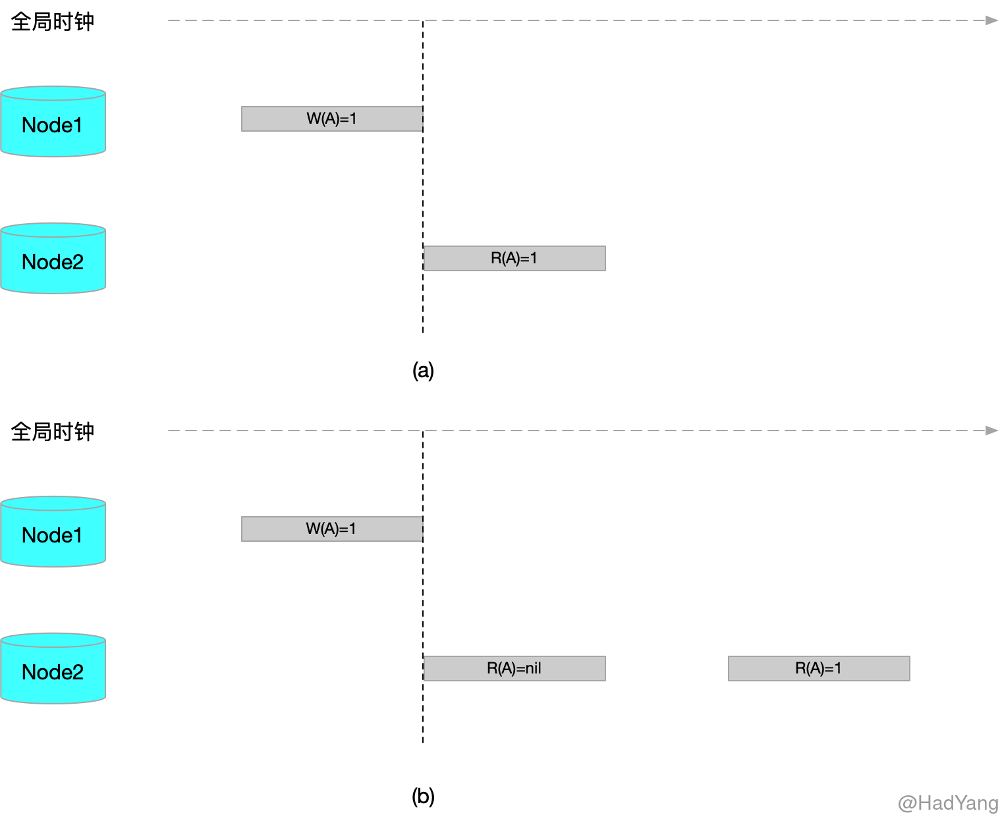
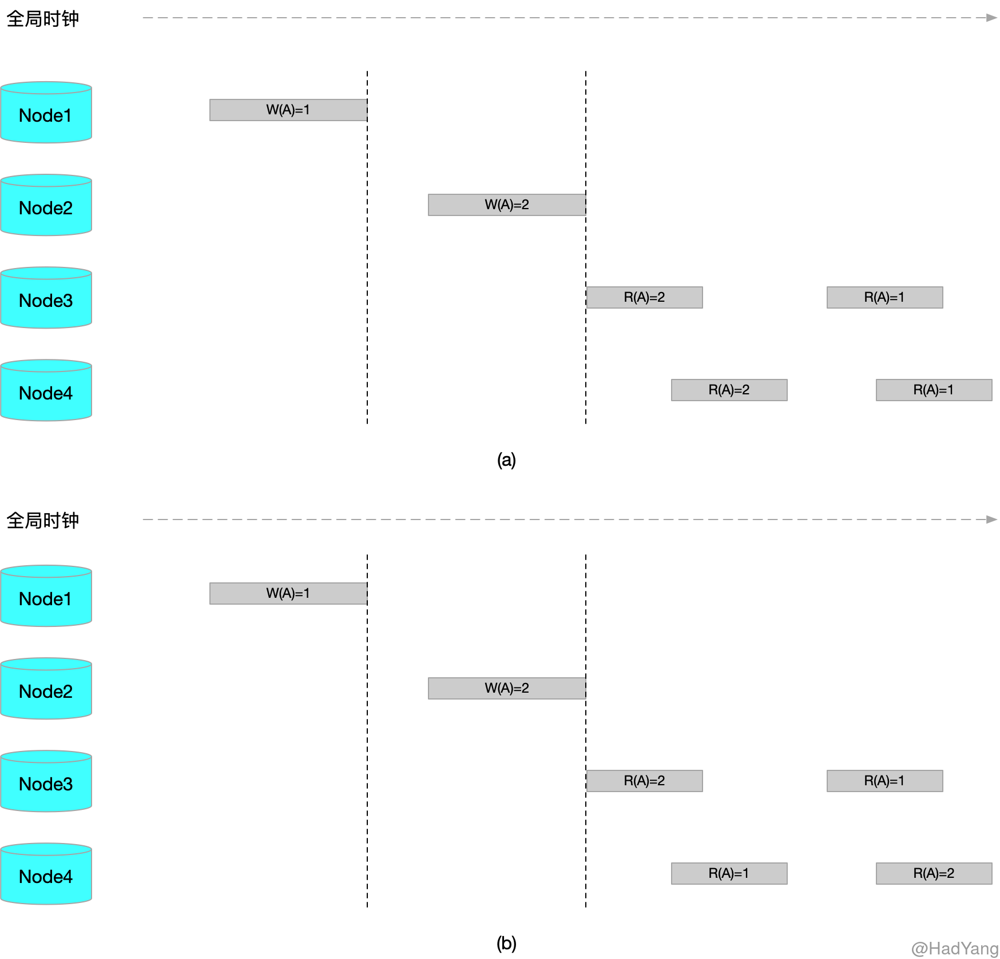
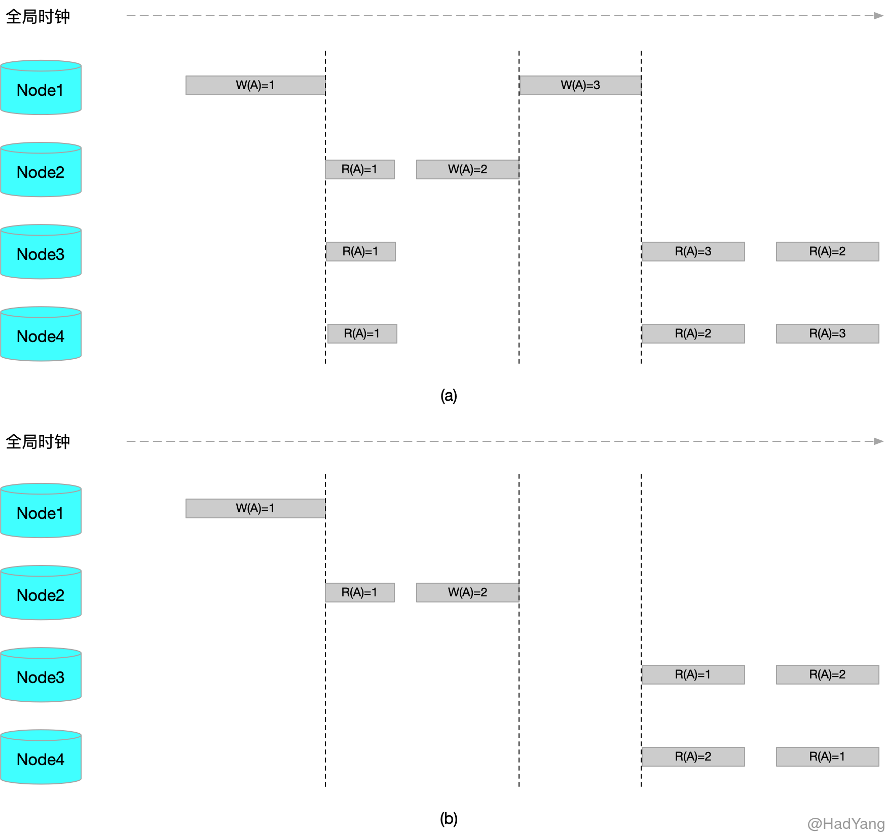
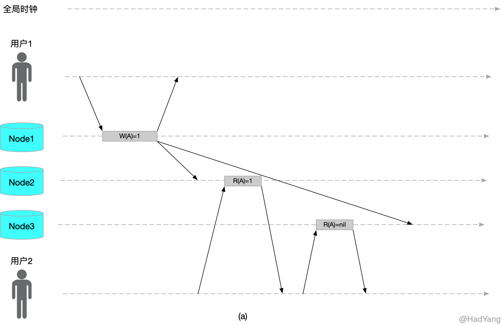
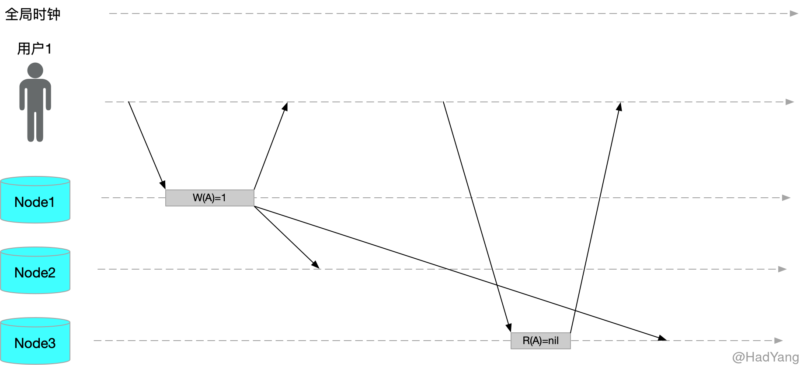

【What is this】什么是一致性？
文章目录
一致性的含义
在计算机领域，一致性的使用场景是多样的，在不同的场景下其含义也大相径庭，主要包括：事务一致性、分布式一致性以及一致性哈希。
事务一致性 是事务 ACID 特性中的一项，是指对数据有特定的预期状态，任何数据修改必须满足这些状态。事务一致性本身应属于应用层的属性，因为数据的预期状态，即约束，是应用层的状态。应用程序可以借助数据库的原子性、隔离性以及持久性来实现一致性。
一致性哈希 是一种 负载均衡 的算法，不是一种哈希算法。一致性哈希常常用于集群中，节点失效后数据的平滑过渡，以减少数据的大量迁移。
分布式一致性 主要是针对分布式环境中，针对各节点之间的延迟和节点失效等问题来协调副本之间的状态。下面就聊聊数据复制与分布式一致性的问题，造成分布式一致性问题的原因主要有两个： 并发写 和 网络延迟。在大多数的复制场景下，我们都会选择一主多从的集群架构，以此来解决并发写的问题。
线性一致性
线性一致性，又被称作强一致性、原子一致性，是分布式一致性中最强的一致性模型。原子一致性指在分布式环境中，数据存在于集群中多个节点，当数据被写入集群中一个节点后，其他所有节点对数据都是 立即可见 的，并且操作是 原子 的。
比较文本化的定义如下：任何对数据 $A$ 的读取，均返回最近一次写的结果。

上图中，a 满足线性一致性，b 不满足线性一致性
线性一致性是最严格的模型，在这个模型下，用户每次查询都能返回期望的值，是确定的。但是在分布式环境中，很少有保持线性一致性的系统，因为这样做的代价太高，会牺牲系统的可用性。
可序列化
可序列化是一种事务隔离级别，当事务需要读写多个数据对象时，其 保证执行结果与多个事务串行执行的效果相同。串行执行的顺序与事务真正执行的顺序无关。
可线性化是读 最近写 （单个对象）的保证，它不会将多个操作打包为事务，所以它也不能防止写倾斜，即不能有效的处理并发写。
数据库会提供可序列化和可线性化，这种组合又被称为 严格的可串行化 或 强的单副本可串行化。基于 2PL 或者 真正串行 执行都是典型的 可线性化。
一致性快照（MVCC），根据事务为数据建立快照数据。MVCC 一定是非可线性化的，MVCC 通过保存一致性快照来避免读加锁，其性质导致它不能包含 最近写，所以从快照中读取就是非线性化。
顺序一致性
顺序一致性是相比于线性一致性弱一些的一致性模型，顺序一致性的定义如下：如果对集群的读写操作与每个节点执行这些操作的顺序一致，则认为集群拥有 顺序一致性。
在顺序一致性中，没有读最近写的要求。因此相比与线性一致性，顺序一致性少了实时性的要求。可以把线性一致性定义为具有实时约束的顺序一致性。

上图中，a 满足顺序一致性，b 不满足顺序一致性
上图中，b 不满足顺序一致性的点在于，Node3 读取顺序与 Node4 读取顺序不一致。可以看出，a 中的数据并不满足全局时钟的顺序，但是同样满足顺序一致性。
因果一致性
因果一致性要求对于两个有因果关联的操作结果，必须以相同的顺序对所有节点可见。因果一致性是比顺序一致性弱的一致性模型，并发的写入在不同节点看到的顺序可能不一致。

上图中，a 满足因果一致性，b 不满足因果一致性
在图 a 中，所有节点都在 $W(A)=2$ 之前执行 $R(A)=1$ ，这就导致 $W(A)=1$ 与 $W(A)=2$ 产生因果关系。所以 Node3 和 Node4 必须保证这两个操作的顺序，而不关心 $W(A)=3$ 的顺序。而图 b 恰好违反了 $W(A)=1$ 与 $W(A)=2$ 的因果关系。
可以看出因果一致性中，各操作只是部分有序，相比与顺序一致性的全序关系来说，因果一致性只满足偏序关系。因此在系统满足顺序一致性的情况下，也同样满足因果一致性，反之则不然。
单调读一致性
单调读一致性是比线性一致性弱，但是比最终一致性强的保证。当读取数据时，单调读保证，如果某个用户依次对 $A$ 进行多次读取，则不会看到回滚现象，即在读取较新值后又发生读旧值的情况。

上图就是不符合单调读的情况，这种情况的出现主要是因为，异步复制导致数据延迟。实现单调读的一种方式是，确保每个用户总是从固定的同一副本执行读取操作。当该副本失效后，则用户读请求转发到其他副本。
读写一致性
读写一致性，也称为写后读一致性，即用户总能看到自己最近提交的更新。但是对其他用户则没有这种保证。

上图就是不符合读写一致性的情况，要让用户获得读写一致性，可以考虑以下方案：
- 如果用户访问可能被修改的内容，则从主节点读取，否则在从节点读取
- 跟踪最近更新时间，如果在主从同步延迟时间之内，则从主节点读取，否则在从节点读取
最终一致性模型
最终一致性是一种很弱的一致性模型，指的是多个节点的数据不一致是暂时的状态，如果没有更多的数据写入，则经过一段时间后，所有副本最终后呈现一致的状态。
理论上来说，最终一致性没有延迟的上限。正常情况下，数据复制可能只有不到1秒的延迟，但是如果系统已接近设计上限，或网络存在问题，则延迟的时间窗口可能增加到几分钟。
CAP 定理
CAP 定理是在分布式系统实践中的经验法则，CAP 定理的内容是针对一个分布式系统，不能同时满足以下三点：一致性、可用性和分区容错性。
- 一致性（Consistency）：等同原子一致性，即强一致性
- 可用性（Availability）：每次请求都能获取到非错的响应，但是不保证获取的数据为最新数据
- 分区容错性（Partition tolerance）：分区相当于对通信的时限要求。系统如果不能在时限内达成数据一致性，就意味着发生了分区的情况。
在分布式系统中，节点分区是常见的，所以分区容错是必须保证的。在这种情况下，我们就需要对 C 和 A 进行权衡。例如现在有 P1 和 P2 两个分区，如果我们允许单个分区进行数据更新，那么就会丧失（强）一致性；如果我们不允许单个分区更新，那么就会导致两个分区均处于不可用状态，丧失可用性。
常见的存储系统
上面说到这么多的一致性模型，那么常见的存储系统都分别满足哪些模型呢？这里列举 MySQL 、Redis 和 Zookeeper来说明，同时也能加深对一致性模型的理解。
首先 Zookeeper 是保证顺序一致性的，ZK 里使用 ZAB 作为共识算法。当写操作到达主节点后，其将操作同步发送到 Follwer 节点，当大于集群 quorum 个数的节点确认后，主节点提交写操作。对于没有确认的节点，主节点会按操作的先后顺序，依次发送给 Follwer 节点。
MySQL 和 Redis 能保证的一致性模型，根据它们的同步配置不同而不同。如果集群开启的是全异步复制，即所有 Slave 和 Master 都是异步，则只能保证最终一致性。如果开启半同步复制，即部分 Slave 与 Master 进行同步复制，则能保证顺序一致性。如果开启全同步复制，则能保证线性一致性。
单调读一致性和读写一致性需要应用层的配合处理，单靠存储系统很难跟踪用户请求，处理代价太大。